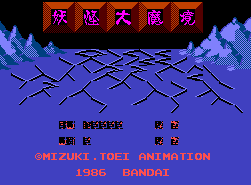

Gegege no Kitarou - Nintendo Games

Controls
- A button: Jump
- B button: Shoot
- Start: Pause
- Select: [not used]
It was released in the US under the name Ninja Kid with many changes including character graphics.
No other information available at this time.
Anime Video Game Resource Center © 1998 by Luis A. Cruz